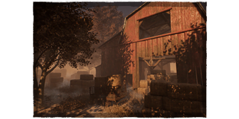
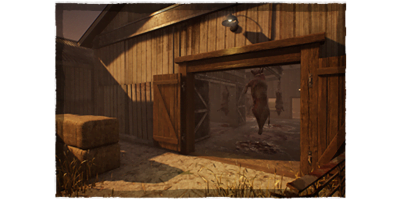
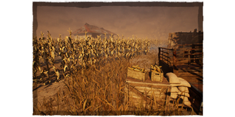
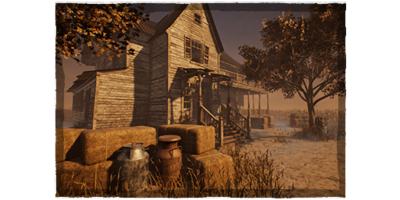
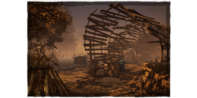
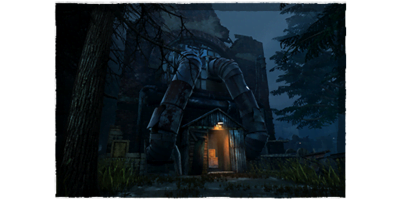
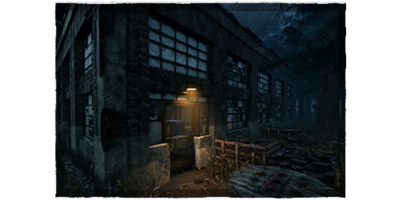
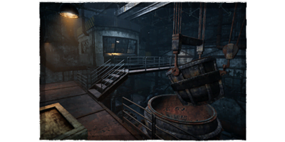
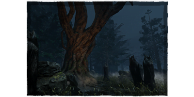
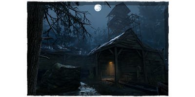

REINOS
¡En esta seccion vas a encontrar los reinos con sus mapas!
¿QUÉ SON LOS REINOS?
Los Reinos son ubicaciones dentro del mundo del Ente. Cada Reino fue el sitio de
una tragedia violenta en el pasado y ahora sirven como arenas para los juicios del Ente.
Hay un
total de 2 Reinos y 10 mapas disponibles.
GRANJA COLWIND
El Reino consiste de 5 mapas y tiene una tematica de granja. El color principal del Reino es naranja. Los mapas disponibles son:
- El Establo
- El Matadero Pestilente
- Los Campos Podridos
- La Casa de los Thompson
- El Arroyo del Tormento
HISTORIA DEL REINO
La Granja Coldwind era ampliamente conocida porque abarcaba dos condados. El señor y la señora Adams pusieron mucho trabajo en la granja, y todas esas ampollas y sudor dieron sus frutos. Pero por alguna razón, un día en 1946, los productos dejaron de llegar. Y cuando las cosechas comenzaron a marchitarse y morir, los investigadores deciden mirar más de cerca. La granja fue abandonada. El polvo cubría el suelo. El moho y la humedad cubrieron el resto. Se encontró materia fecal en toda la casa. Todo menos en una habitación. Una habitación parecía haberse salvado de lo que sufría el resto de la casa. No tenía otra explicación más de que alguien debía vivir allí. Pero no se encontró ningún alma viviente. En su lugar se descubrieron restos en el sótano. Ambos del Sr. y la Sra. Adams, junto con el ganado. Varios años después, cuando la gente intentaba renovar y esperaban vender el lugar, descubrieron cosas perturbadoras dentro de las paredes cuando empezaron a colapsar. Cosas y creaciones unidas por manos humanas. Toda la granja debía ser olvidada. Pero de alguna manera, la gente se sentía atraída por ella a medida que ocurrían las cosas. El silo se derrumbó durante una tormenta, revelando dentro cadáveres. Y una noche, se encendió la cosechadora, arrojando sangre a través de los árboles. Ahora, la Granja Coldwind no es más que el zumbido que se puede escuchar durante las noches de verano.
El Establo
El Establo es el principal punto de referencia del mapa.
El Matadero Pestilente
El matadero es el principal punto de referencia del mapa.
Los Campos Podridos
Campos Podridos es uno de los tres mapas sin puntos de referencia importantes.
La Casa de los Thompson
La casa de campo es el principal punto de referencia del mapa.
El Arroyo del Tormento
El silo es el principal punto de referencia de mapa.
FINCA MACMILLAN
El Reino consiste de 5 mapas y tiene una tematica industrial. El color principal del Reino es el azul. Los mapas disponibles son:
- Torre de Carbón
- Depósito Quejumbroso
- Fundición de la Miseria
- Bosque de la Guarida
- Pozo de Asfixia
HISTORIA DEL REINO
La finca MacMillan fue una vez la envidia de incluso las familias más acaudaladas. Ahora, es solo un destino siniestro con nada más que horribles recuerdos de la impiedad en su forma más pura. La fundición y la mina fueron el corazón y el centro de la finca. Los que tuvieron la mala fortuna de ser empleados de Evan MacMillan. Las esposas pedian que sus maridos vuelvan a casa. Las horas de trabajo se hicieron más largas, a veces yendo de día a día y el pago disminuía. La mano de hierro de Evan y las estrictas reglas se hicieron más estrictas cuanto más tiempo estuvo en el control. Una tarde, se prohibió la salida de una gran fuerza minera y se le ordenó reunirse dentro de uno de los pozos mineros más profundos e inestables. Las objeciones fueron recompensadas con una visita al horno. Preguntas y rumores surgieron en la ciudad. Pero no había respuestas. Un trabajador menos, perdido por una pobre viuda tal vez no era suficiente para acciones reales. Finalmente, Evan MacMillan rompió y selló a sus trabajadores en la mina, asfixiando a aquellos que no fueron aplastados por el estallido inicial de los explosivos. Los restos hambrientos de Archie MacMillan fueron encontrados más tarde. Un esqueleto silencioso con una burlona sonrisa artificial en su cráneo sin carne. Lo que queda de la finca ahora son meras ruinas y mitos. Los adolescentes entran al área de vez en cuando en un juego de valor, trayendo información nueva sobre lo que está sucediendo en la finca. Porque de alguna manera, las cosas se están moviendo. La maquinaria sobrante sigue arrancando. El indicador de gas en el generador sigue disminuyendo.
Torre de Carbón
El almacén es el punto de referencia principal del mapa.
Depósito Quejumbroso
El depósito es el principal punto de referencia del mapa.
Fundición de la Miseria
La fundidora es el principal punto de referencia en el mapa.
Bosque de la Guarida
El Bosque de la Guarida es uno de los tres mapas sin puntos de referencia significantes.
Pozo de Asfixia
La mina es el punto de referencia principal del mapa.
